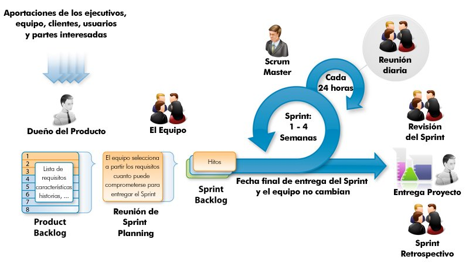
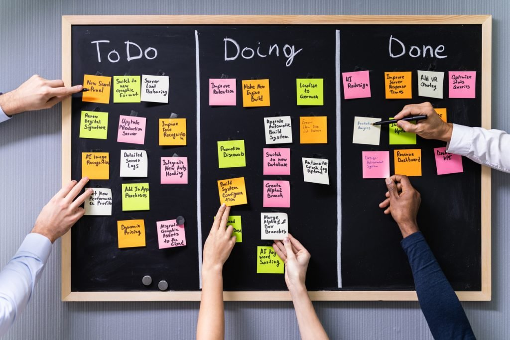
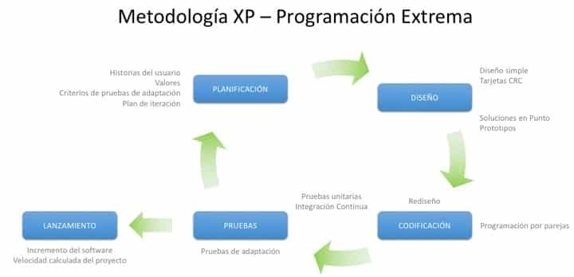

La ciencia y la tecnología avanzan en etapas que van desde el conocimiento más abstracto hasta el producto que llega al mercado. Es fundamental distinguir cada etapa porque tienen objetivos, recursos, plazos y riesgos muy distintos.
| Tipo | Objetivo | Quién la financia | Ejemplo real |
|---|---|---|---|
| Investigación básica | Ampliar el conocimiento científico sin aplicación inmediata prevista. | Estado (universidades, CSIC). Alto riesgo, largo plazo. | Estudio de las propiedades cuánticas del grafeno en los años 90. |
| Investigación aplicada | Orientar el conocimiento hacia una necesidad práctica concreta ya identificada. | Mixta (público + privado). Riesgo medio. | Investigar cómo usar el grafeno para fabricar baterías de mayor densidad energética. |
| Desarrollo tecnológico | Transformar los resultados en un producto, proceso o servicio real (prototipado y pruebas). | Empresa privada. Riesgo bajo-medio. | Diseñar y probar el prototipo del paquete de baterías de grafeno en un vehículo eléctrico. |
| Innovación | Introducir con éxito el producto en el mercado o en la sociedad. Sin adopción del mercado, no hay innovación. | Empresa privada. | Comercialización masiva del vehículo eléctrico con la nueva batería. |
En los ámbitos de la tecnología y la ingeniería, donde los procesos son complejos y dinámicos, resulta de especial importancia conseguir equipos de trabajo cohesionados, en los que los talentos de todos sus miembros se pongan al servicio del objetivo común.
Las principales técnicas y estrategias para facilitar el trabajo en equipo son:
Existen dos grandes enfoques para gestionar proyectos tecnológicos. La elección entre uno y otro depende fundamentalmente de cuánto se conocen los requisitos al inicio y con qué frecuencia cambian durante el desarrollo.
Es la metodología adecuada cuando los requisitos son estables y bien definidos desde el inicio: obras civiles, proyectos aeronáuticos, construcción de infraestructuras, ingeniería nuclear.
Antes de las metodologías ágiles, la gestión de proyectos se basaba en metodologías tradicionales como el modelo en cascada (waterfall). Estas seguían un enfoque secuencial y rígido: cada fase debía completarse antes de iniciar la siguiente.
Sin embargo, en entornos dinámicos presentaban varias limitaciones:
División del problema en partes para resolverlos de forma rápida, fomentando la eficacia de trabajo.
Todos trabajan e interaccionan como un único equipo.
Se documenta el proceso con métodos y herramientas sencillas.
Se tratan conjuntamente planificación y ejecución para responder eficazmente a los cambios.
El uso de estas metodologías posibilita una forma de trabajo cíclica mediante la cual el proyecto se va mejorando y se adapta a las circunstancias que van surgiendo. Se recomienda cuando:

| Rol | Función |
|---|---|
| Product Owner | Representa la voz del cliente. Gestiona y prioriza el Product Backlog, asegurando que las tareas con mayor valor se trabajen primero. |
| Scrum Master | Facilitador del proceso Scrum y mentor del equipo. Garantiza que la metodología se aplique correctamente y ayuda a eliminar impedimentos. |
| Development Team | Grupo multidisciplinar y autoorganizado que lleva a cabo el trabajo técnico. No existen jerarquías internas; todos tienen las mismas responsabilidades. |
| Artefacto | Descripción |
|---|---|
| Product Backlog | Lista dinámica y priorizada con todas las funcionalidades, tareas, requisitos, correcciones y mejoras necesarias. Gestionado por el Product Owner. |
| Sprint Backlog | Subconjunto del Product Backlog seleccionado para el sprint. Incluye las tareas desglosadas necesarias para alcanzar el objetivo del sprint. |
| Incremento del Producto | Resultado tangible y funcional del trabajo completado al final de cada sprint. Debe cumplir la Definición de Hecho (Definition of Done). |
| Evento | Descripción |
|---|---|
| Sprint | Ciclo de trabajo iterativo de entre 1 y 4 semanas. Durante él se trabaja en las tareas del Sprint Backlog. |
| Sprint Planning | Reunión inicial donde se seleccionan las tareas más prioritarias del Product Backlog. Se establece el objetivo del sprint. |
| Daily Scrum | Reunión diaria breve (máx. 15 min) donde el equipo sincroniza su trabajo: ¿Qué hice ayer? ¿Qué haré hoy? ¿Qué impedimentos tengo? |
| Sprint Review | Al final del sprint se presenta el incremento al Product Owner y los interesados. Se recopila feedback. |
| Sprint Retrospective | Reunión final del sprint donde el equipo analiza cómo trabajó e identifica mejoras para el siguiente sprint. |

Las tareas individuales se representan mediante tarjetas de colores, y en cada tarjeta se recoge información de la tarea. Todas las tarjetas pasan por todas las columnas del tablero hasta que se dan por finalizadas.
La metodología Kanban no diferencia roles y mantiene a todo el equipo en un mismo nivel para evitar bloqueos derivados de la burocracia y las asignaciones. Además, no requiere reuniones periódicas, ya que el propio tablero ofrece visibilidad continua del estado del trabajo.
| Elemento | Descripción |
|---|---|
| Tablero Kanban | Representación visual del flujo de trabajo dividido en columnas (Por hacer, En progreso, Hecho, etc.). |
| Tarjetas Kanban | Cada tarjeta representa una tarea con descripción, responsable y plazos. Se mueven entre columnas. |
| WIP | Número máximo de tareas que pueden estar "en progreso" simultáneamente. Limitar el WIP mejora la eficiencia. |
| Políticas explícitas | Reglas claras para definir cuándo una tarea puede pasar de una columna a otra. |
| Métricas | Lead Time (tiempo total) y Cycle Time (tiempo efectivo de trabajo). |

| Práctica | Descripción |
|---|---|
| Desarrollo iterativo | Pequeños ciclos con entregas frecuentes de software funcional. |
| TDD (Test-Driven Development) | El código se desarrolla escribiendo primero las pruebas. |
| Programación en parejas | Dos desarrolladores trabajan juntos en el mismo código. |
| Integración continua | El código se integra y prueba regularmente. |
| Refactorización continua | Se mejora la estructura del código sin alterar funcionalidad. |
| Propiedad colectiva | Todo el equipo es responsable de cualquier parte del código. |
| Entrega continua | Software siempre en estado entregable. |
| Ritmo sostenible | Jornadas laborales equilibradas para evitar agotamiento. |
| Rol | Función |
|---|---|
| Cliente | Proporciona requisitos, prioriza historias de usuario y valida entregas. |
| Programadores | Escriben el código aplicando las prácticas XP. |
| Tester | Asegura que el software cumpla los requisitos mediante pruebas. |
| Tracker | Monitorea el progreso del proyecto. |
| Coach | Ayuda al equipo a seguir las prácticas XP. |
| Aspecto | Waterfall | Scrum | Kanban | XP |
|---|---|---|---|---|
| Estructura | Fases secuenciales estrictas | Sprints (1-4 semanas) | Flujo continuo | Iteraciones cortas (1-2 semanas) |
| Requisitos | Fijos desde el inicio | Cambiantes | Continuos e impredecibles | Cambiantes |
| Roles | Jefe de proyecto y equipo jerárquico | Product Owner, Scrum Master, Dev Team | Sin roles definidos | Cliente, Programadores, Tester, Tracker, Coach |
| Reuniones | Por hitos de fase | Periódicas (Planning, Daily, Review, Retro) | No periódicas | Frecuentes con el cliente |
| Cambios | Muy costosos | Entre sprints | En cualquier momento | En cualquier momento |
| Uso ideal | Obras civiles, aeronáutica, infraestructuras | Requisitos cambiantes + entregas iterativas | Soporte, mantenimiento, operaciones | Software donde la calidad del código es crítica |
Todo proyecto tecnológico sigue un ciclo de vida estructurado. Es importante saber identificar en cuál de estas fases se encuentra cualquier proyecto descrito en un enunciado.
Definir con precisión qué problema se quiere resolver y para quién. Una mala definición del problema es la causa más frecuente de fracaso en proyectos tecnológicos. La necesidad debe expresarse en términos medibles.
«Los agricultores necesitan un sistema de riego que reduzca el consumo de agua un 30 % sin perder producción» es una necesidad bien definida; «mejorar el riego» no lo es.
Estudia si el proyecto es factible en tres dimensiones. Si alguna dimensión es claramente negativa, el proyecto no debe iniciarse.
¿Disponemos de la tecnología, los materiales y el conocimiento necesarios? Ejemplo: ampliar una central eólica requiere verificar que el terreno soporta las nuevas torres y que la red eléctrica puede absorber la potencia adicional.
¿Los beneficios esperados superan los costes totales (inversión + operación + mantenimiento)? Se valora mediante el retorno de la inversión (ROI) o el período de amortización.
¿Existen permisos, normativas o plazos que lo impidan? Ejemplo: una instalación fotovoltaica en suelo protegido puede ser técnica y económicamente viable pero legalmente inviable.
Se identifican y secuencian todas las tareas del proyecto, se asignan recursos humanos y materiales, y se establecen plazos y responsables.
Las herramientas principales de planificación son:
Definición de tareas siguiendo el criterio SMART:
Además incluye: cronograma (fechas de inicio y fin de cada tarea), presupuesto (cálculo detallado de costes), agentes responsables (persona o equipo asignado) y entregables con fechas.
Desarrollo real del trabajo según el plan establecido. La gestión de cambios es una parte imprescindible de esta fase: ningún proyecto se ejecuta exactamente como se planificó. Se gestionan las desviaciones de plazo, coste y alcance. Se aplican los recursos y conocimientos de los agentes responsables, se dirigen las acciones y se coordinan los esfuerzos del equipo.
Comparación continua del avance real con el planificado mediante indicadores de rendimiento (KPI). Permite detectar desviaciones a tiempo y adoptar medidas correctoras antes de que el impacto sea irreparable. Se desarrolla de forma paralela a la ejecución e incluye:
Se verifica si se cumplieron los objetivos iniciales, se documentan las lecciones aprendidas para futuros proyectos y se cierra formalmente el proyecto entregando los resultados al cliente. Esta fase es frecuentemente omitida en la práctica, con consecuencias negativas para proyectos futuros.
| Ámbito | Organismo | Normas |
|---|---|---|
| Internacional | Organización Internacional de Normalización (ISO) — todos los campos excepto electrotecnia. Comisión Electrotécnica Internacional (IEC/CEI) — campo eléctrico y electrónico. | Normas ISO, Normas IEC |
| Europa | CEN (Comité Europeo de Normalización), CENELEC (electrotécnica), ETSI (telecomunicaciones) | Normas EN |
| España | Asociación Española de Normalización (UNE) | Normas UNE |
| Regional / local | Comunidades autónomas y ayuntamientos pueden contar con otros organismos. | — |
Los organismos redactan las normas mediante un proceso de participación de agentes implicados (fabricantes, usuarios, expertos técnicos y administraciones), asegurando la inclusión de diferentes puntos de vista y necesidades.
Permite localizar fácilmente todos los contenidos. Incluye títulos de todos los documentos y el número de página.
Documento que describe claramente los objetivos del proyecto, las soluciones posibles, la solución escogida y las razones para ello.
b.1 Memoria descriptiva — Documento informativo, claro y conciso. No incluye detalles innecesarios ni cálculos, solo resultados. Apartados:
b.2 Anexos — Opcionales. Amplían información donde sea necesario (condiciones, cálculos, manuales de uso, información sobre maquinaria…).
Representación gráfica del proyecto: dibujos, esquemas y figuras que ayudan a entender visualmente lo que se tiene que construir o instalar.
Condiciones en que se debe ejecutar un proyecto, plazos y detalle de actividades (elemento contractual, redacción rigurosa).
Coste total del proyecto. Se establece mediante mediciones con las unidades de obra (partes del proyecto valorables de forma independiente). El presupuesto es el sumatorio de las unidades de obra necesarias.
Documentos necesarios por cuestión legal, como el estudio de seguridad y salud o el estudio de impacto ambiental.
A lo largo del proyecto se genera diferente documentación técnica:
Permite al equipo organizarse y entender los plazos, procesos y requisitos. También documenta el "saber hacer" de la compañía, facilitando la referencia en futuros proyectos.
Dirigida a un público externo para dar a conocer el proyecto o producto. Puede tomar la forma de manuales de usuario, guías de uso, tutoriales o materiales informativos.
Para difundir el proyecto a los agentes implicados se pueden realizar eventos, seminarios o conferencias, presentándolo de forma atractiva. Para una buena presentación hay que tener en cuenta:
Las actividades de difusión están ligadas a Internet (anuncios, webs y redes sociales). Para la creación de una web hay que cuidar:
Además de las fases y documentación del proyecto, el currículo oficial de Tecnología e Ingeniería II recoge dos bloques de competencias transversales que forman parte integral de la figura profesional del ingeniero (saberes básicos TECI.2.A.3 y TECI.2.A.4). No son exigibles como pregunta directa en el examen, pero sí como actitudes que estructuran el trabajo en equipo, la toma de decisiones y la respuesta ante imprevistos.
Todo proyecto tecnológico que pueda alterar el medio ambiente debe someterse a una Evaluación de Impacto Ambiental (EIA). Este procedimiento administrativo (regulado por la Ley 21/2013) analiza los efectos del proyecto antes de su ejecución, y forma parte natural de la documentación técnica del proyecto (Bloque A) y de la sostenibilidad (Bloque G).
Estos casos conectan I+D+i, metodología de trabajo, documentación técnica, difusión y sostenibilidad en situaciones tecnológicas realistas.
| Situación | Enfoque de gestión | Documento o evidencia generada |
|---|---|---|
| Requisitos estables y cerrados | Secuencia planificada por fases | Plan de proyecto, cronograma y entregables definidos |
| Necesidad de prototipos y revisión frecuente | Trabajo iterativo | Versiones, pruebas, retroalimentación y registro de cambios |
| Trabajo con muchas tareas pequeñas | Gestión visual del flujo | Tablero, responsables, estado y prioridades de trabajo |
Ejemplo integrador para cerrar el bloque con una situación completa, sin fragmentar artificialmente teoría, gestión y documentación.
Un centro educativo quiere reducir el consumo eléctrico de un aula-taller mediante sensores, registro de datos y una pequeña instalación de apoyo fotovoltaico para alimentar iluminación auxiliar y dispositivos de medida.
| Fase | Decisión técnica | Evidencia documental |
|---|---|---|
| Identificación del problema | Medir consumo, horas de uso, iluminación y hábitos de utilización. | Memoria inicial con necesidades, restricciones y objetivos. |
| Diseño de solución | Seleccionar sensores, microcontrolador, sistema de registro y esquema eléctrico. | Planos, diagramas, lista de materiales y presupuesto. |
| Prototipado | Montaje de prueba, validación de medidas y ajustes de programación. | Registro de ensayos, incidencias y versiones. |
| Evaluación | Comparar consumo antes/después y estimar ahorro. | Informe técnico con datos, conclusiones y propuestas de mejora. |
| Comunicación | Presentar resultados a usuarios no especialistas. | Resumen, infografía, presentación o póster técnico. |
Para cerrar el bloque, se añade una comprobación de coherencia entre necesidad, solución técnica, metodología, documentación, comunicación e impacto. La idea es que cualquier proyecto pueda leerse como una cadena única y no como una lista de apartados aislados.
| Parte del proyecto | Pregunta de control | Señal de calidad |
|---|---|---|
| Memoria | ¿Explica por qué se adopta la solución? | Incluye alternativas y justificación técnica. |
| Planos | ¿Permiten fabricar, montar o entender la solución? | Escalas, cotas, símbolos y vistas son suficientes. |
| Pliego | ¿Define condiciones de ejecución y calidad? | Materiales, montaje, tolerancias y verificaciones. |
| Presupuesto | ¿Cuantifica recursos de forma razonable? | Unidades, mediciones y precios coherentes. |
| Anexos | ¿Respaldan cálculos y decisiones? | Cálculos, catálogos, normativa y ensayos. |